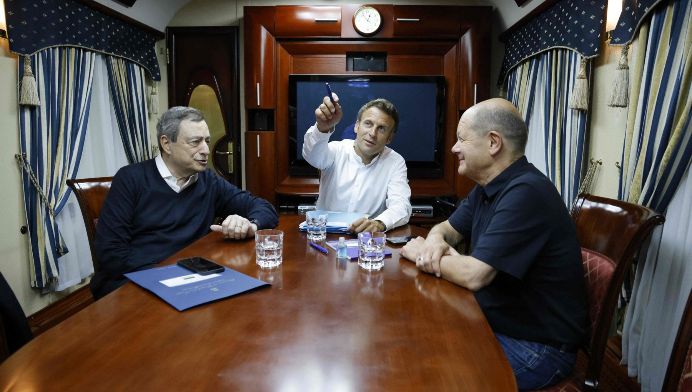
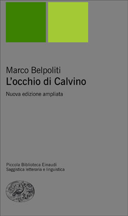

34:46 · 2 OPERE
Appunti sulle prossime elezioni politiche e spunti per un programma democratico.
Il filo del discorso
Dr Divago propone appunti per un programma democratico partendo dalla critica dei governi tecnici e della riduzione della politica a gestione economica. La domanda su ciò in cui credono Draghi e Monti diventa una riflessione sulla riconoscibilità delle scelte pubbliche e sul rapporto fra cittadino, società e istituzioni. Il relatore accusa l’industria culturale di costruire autorevolezza e consenso, usando un articolo di Marco Belpoliti e ricordi personali come esempi polemici. Il discorso si sposta poi sui nuovi movimenti politici: ne sostiene la partecipazione elettorale, ma ne critica conflitti, frammentazione e difficoltà di formulare proposte. Il confronto con le contrapposizioni ideologiche del dopoguerra introduce un richiamo molto negativo a Il modello di Stalin di Rita Di Leo. Nella parte propositiva, Dr Divago distingue agire da reagire: un’alternativa dovrebbe offrire un programma, anziché definirsi soltanto attraverso uscite e rifiuti. L’Unione Europea viene discussa come struttura da riformare, valutando se il problema risieda nelle istituzioni o nel loro orientamento politico. L’elezione di Ursula von der Leyen è usata come esempio di una diversa scelta ritenuta possibile. La conclusione propone una revisione dei privilegi fiscali e delle retribuzioni istituzionali come questione di uguaglianza, più che di semplice risparmio. La scheda conserva queste proposte e la loro motivazione, distinguendo i giudizi sulle persone dai fatti verificabili e la critica politica dalla descrizione delle regole costituzionali e fiscali.
I libri nel discorso

La fotostoria: i 17 mesi di Draghi, l’uomo solido che non tradisce emozioni
Identificazione probabile
Illustrazione dell’articolo: ILLUSTRAZIONE DELL’ARTICOLO, Repubblica, 20 luglio 2022. Fotografia di Draghi, Macron e Scholz sul treno per Kiev del 16 giugno 2022. Non copertina libraria.
Fotografia associata all’articolo. Identificazione contestuale probabile.
Articolo di Belpoliti su volto, postura e gambe di Draghi: identificazione contestuale probabile della fotostoria, titolo non pronunciato.
Passaggio 9:57 ↗ · Fonti e libro ↗
L’occhio di Calvino
Identificazione probabile
Copertina: L’occhio di Calvino, Einaudi 2006, nuova edizione ampliata, Piccola Biblioteca Einaudi Nuova serie, XVIII,328 pagine, ISBN 9788806179793. Copertina grigia con due quadrati verdi e titolo leggibile. Non è identificata come l’edizione del periodo dell’incontro personale raccontato.
Immagine autentica dell’opera, controllata visivamente; l’edizione di riferimento non è attribuita al filmato.
Lavoro di Belpoliti su Calvino ricordato senza titolo: L’occhio di Calvino è un riscontro probabile, non certo.
Passaggio 10:58 ↗ · Fonti e libro ↗